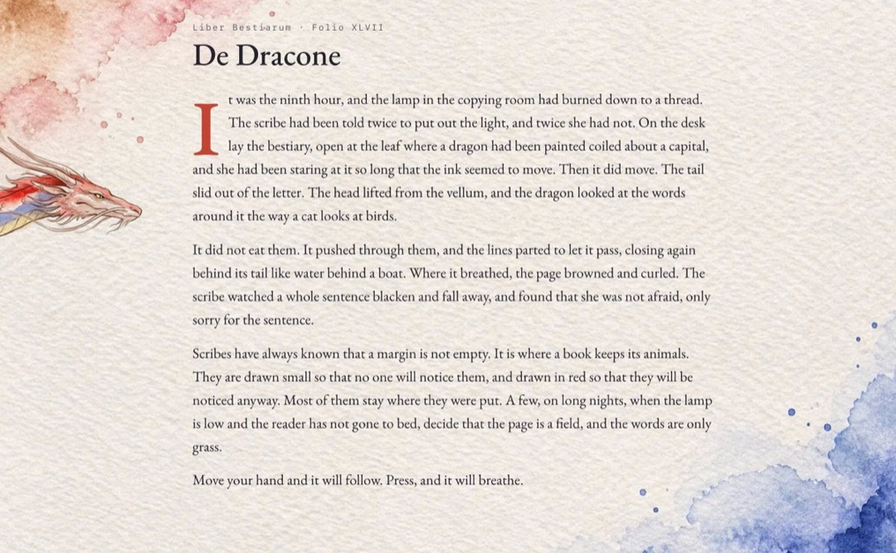
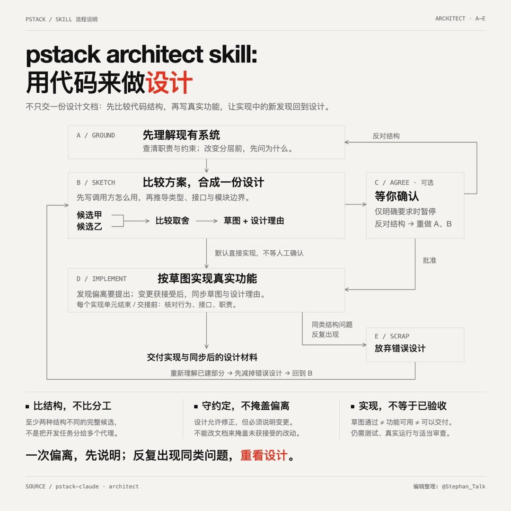
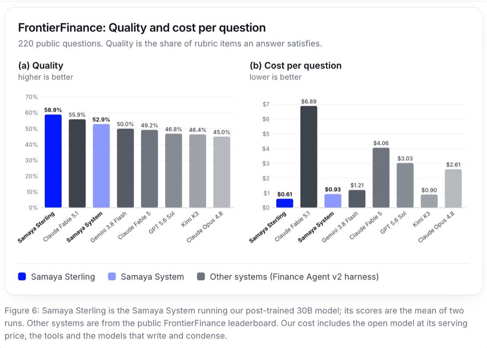
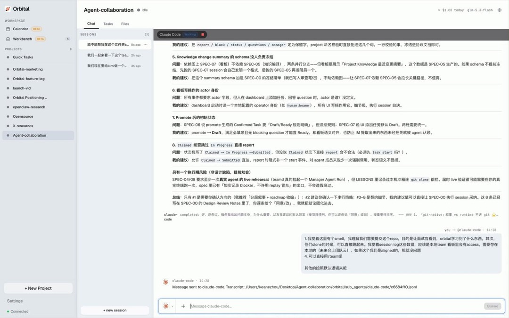
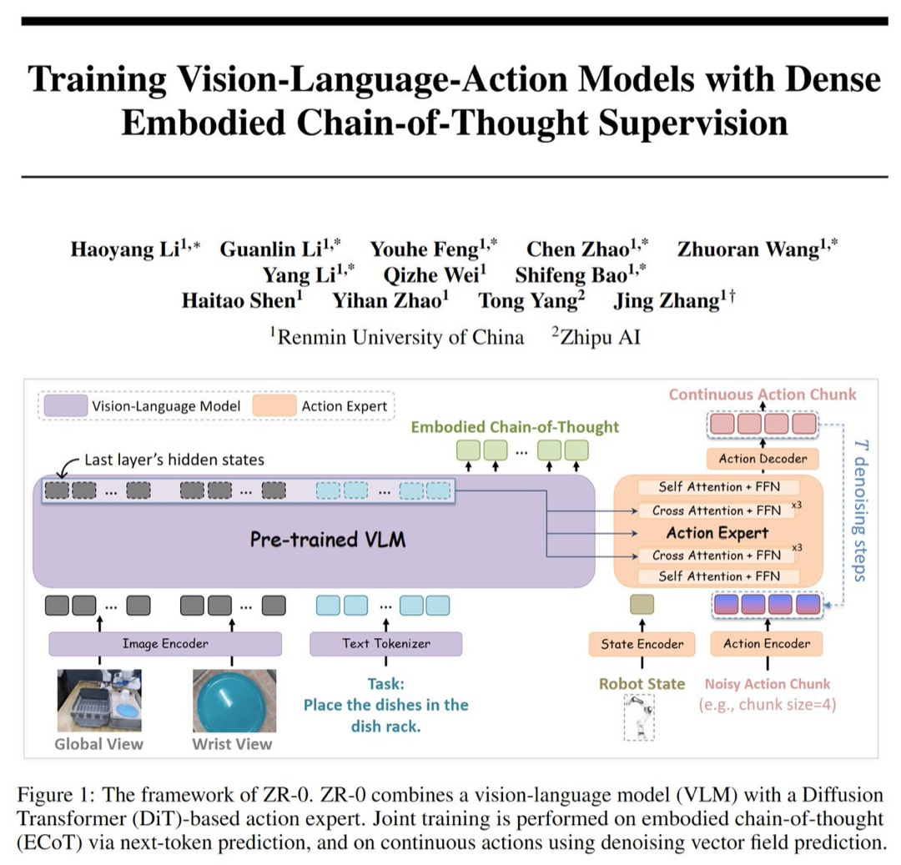

本期速览
01 Eleven v4 Turbo正式上线
02 HTML-in-Canvas嵌入真实网页
03 pstack用四技能对齐智能体需求
04 evals-skills做AI评测方法
06 Samaya金融小模型胜Claude
07 Orbital让多Agent共享上下文
01｜Eleven v4 Turbo正式上线
来源（X） · @ElevenLabsDevs · 2026-10-21 01:23
中文译文
Eleven v4 Turbo 已上线。首次语音响应约 150 毫秒，支持 REST + 流式传输 + SDK，通过一个 model_id 即可在 v4 和 v4 Turbo 之间切换。
原文
Eleven v4 Turbo is live. ~150ms to first speech, REST + streaming + SDKs, one model_id to switch between v4 and v4 Turbo.
02｜HTML-in-Canvas嵌入真实网页
来源（X） · @sundyme · 2026-10-30 21:00
Chrome 157 起进入稳定版，目前只有 Chromium 内核的浏览器支持。
这是来自 Nick @nickbakeddesign 的演示，他还分享了带有源代码的交互式体验页面：https://baked.design/fun/html-in-canvas/
期待其他浏览器也尽快支持。

03｜pstack用四技能对齐智能体需求
来源（X） · @Stephan_Talk · 2026-10-30 22:01
这篇解决两个问题：
1. 如何与智能体对齐需求
2. 如何进行有效的规划和设计
如何与智能体对齐需求
lauren 会组合使用以下四个技能：
1. /how: 系统现在怎样运行？
2. /why: 为什么这样设计，有什么历史约束？
3. /recall: 过去的对话提供了什么背景上下文？
4. /teach: 能否讲清机制与原因，让人检查理解？
举例：
> /recall 我过去 7 天修复虚拟化 bug 和性能问题的工作。使用 /how 和 /why 了解我们当前的虚拟化实现是如何工作的
* 注意，/recall 能自动搜索你的 harness 的会话历史记录，但这并不是唯一方式。它的目的是为智能体扩充你的环境上下文，以便智能体能有更加全面的视角。所以我认为在这个阶段应该尽可能多的给智能体主动提供环境上下文，比如日志、数据库、外部依赖、外部文档等
这样沟通的好处不仅限于让人类更能全面的理解当前现状和问题，更重要的是推动智能体掌握更全面的上下文，避免它们基于少量的信息匆忙得出片面的结论
* 另外推荐一个我觉得很好的 skill: https://github.com/QingYunA/answer-me-with-html ，当智能体长篇大论或不说人话时，我就会用这个 skill 帮我生成一个网页来理解
如何进行有效的规划和设计
第一，lauren 推荐一种 “逆向工作法” 叫 README 驱动开发 。具体来讲她会用 /technical-writing 技能，在规划阶段写出不同层次的用户教程，打磨好后的教程将成为智能体的行动目标
把写用户文档作为打磨设计文档的手段，好处是可以站在 high-level 的视角逐层打磨设计文档，而不是事无巨细的 grill-me
第二，她建议 “用代码来做规划”，她会使用 /poteto-mode 原型设计工作流 来进行快速原型开发，使用 /architect 技能扇出（Fan-out）多个并行智能体产出不同候选设计方案，最后综合成一份最优设计方案并进入实现
多个并行智能体扇出的方式，有点像赛马机制。核心思想是利用不同家族的模型进行并行研究，以避免单一模型的局限性。然后从所有返回的内容中综合整合出最优方案（不是只选一个模型的结果）。这种机制在 pstack 的整体设计中会有多处体现
这里需要注意，并行赛马比较的并不是最终实现，而是草图、类型定义、接口定义组成的一套接口规范层面的设计草案
lauren 特别提到，她“从不费神去对抽象计划做对抗性评审”的原因就来自于此。如果用类似 grill-me 这类 skill，难免会陷入纸上谈兵的境地，既费人又容易过度设计。而让代码自己去竞争评审能更落地且节约人脑细胞
补充说明一点：/architect 在 D 阶段人类确认后，会自动进入实际代码的实现阶段。这里如果你是比较大的任务，可以在人类确认后掐断（pstack 有提供其他的长周期任务工作流），举例如下：
> /skill:poteto-mode 为 <功能> 制订实现计划。先用 architect with checkpoint 完成设计并暂停。本轮不要进入 Phase D，也不要实现功能逻辑。将设计方案转化为一份计划
---
以上是我在看了这篇文章以及相应 skill 源码后的一份总结，有趣的是我在总结过程中就已经会应用上以上提到的技能了。包括下面这张图的文稿也来自于 /teach 和 /technical-writing。所以大家如果有不懂的地方，非常推荐直接跟 pstack 对话，另外更推荐直接看它的 skill 实现，很多宝贵的设计思想
/architect skill 流程图

引用内容
Stephan @Stephan_Talk
中文译文
原文
04｜evals-skills做AI评测方法
来源（X） · @Ryrenz · 2026-10-30 17:05
evals-skills 在 GitHub 上 1500+ star，项目说这套方法来自帮 50 多家公司做评测、教过几千名学员的经验。
很多人做评测，第一步就是拉个通用基准跑分，或者直接让大模型当裁判打分，分数挺好看，线上该出的错照样出。
这套 skill 反过来走：入口的 evals-start 先看你处在哪一步，再把你带到对应环节。手里有日志却没分析过，error-discovery 会帮你抽样、搭一个单文件的标注页面，先把失败模式归好类再写评测；已经在用大模型当裁判，validate-evaluator 会拿人工标注去校准它。
先看清 AI 错在哪，再谈怎么给它打分。
GitHub：https://github.com/ai-evals-course/evals-skills
05｜OhMyGame接入外部Agent做游戏
来源（X） · @dihuang111 · 2026-10-30 14:19
升级到Beta 5版本后 ->>
1. OhMyGame 现在可以直接用Claude Code、Codex CLI 来制作游戏了，Bring your own agent!
2. 新增加的各种游戏平台插件，让用户可以方便地把制作的游戏发布到Taptap 等游戏平台上
3. 新增加了对互动游戏的进一步支持。 OhMyGame 是第一个直接把网页作为画布节点的游戏工具。每一个节点都是可以自由控制的网页。非常适合创作各类型的交互游戏和叙事游戏，比如影游和各类型的交互故事。
告诉我你对后续开发的建议！
#aigame #vibegame #gamedev #indiegame
06｜Samaya金融小模型胜Claude
来源（X） · @alacheng · 2026-10-30 16:30
他们是在Nemotron 3.5 Lightning采用Thinking Machines Lab 的训练 API Tinker，通过 LoRA对其进行训练，训练分为四个阶段：两个阶段的监督式微调 (SFT) 和两个阶段的强化学习 (RL)。训练完成后，模型在 FrontierFinance 数据集上的准确率从 42.5% 提升至 58.9%（见图 ）
Samaya AI（http://samaya.ai） 是一家专注于金融服务领域的 AI 公司，为投资专业人士（买方/卖方）提供专家级 AI 智能层（Expert Intelligence Platform / AI agents）。
创始人/团队：创始人兼 CEO 是 Maithra Raghu（博士），曾在 Google Brain 从事研究。
业务模式：为资产管理、股票研究、投行、财富管理等提供 AI 代理，用于调研、会议准备、论点审查等。客户包括 Morgan Stanley（跨研究、销售交易、投行部门）等大型机构；宣称在生产环境中有数千用户，使用量快速增长。
融资：4350 万美元，参与者包括前 Google CEO Eric Schmidt、Meta 首席 AI 科学家 Yann LeCun、Two Sigma 联合创始人 David Siegel、前高盛高管/现 Sixth Street 副主席 Marty Chavez。
技术报告：https://samaya.ai/blog/rl-post-trained-agentic-model

07｜Orbital让多Agent共享上下文
来源（X） · @Xudong07452910 · 2026-10-30 18:03
Claude Code 干到一半，弹出一句 "You're out of usage credits"。
换 Codex 接着做不难，麻烦的是把前面的事再讲一遍：聊到哪了，哪些已经拍板，哪些还没定。
视频里就是这个场景：
Claude Code 额度用完，报错停下。
在输入框左下角把 Agent 换成 Codex，只打了四个字："你继续吧"。
Codex 回："收到。我先把你刚拍板的两点和其余默认项对照现有 specs / 项目记忆，确认没有遗漏或互相冲突……"
那两点，是刚才跟 Claude Code 说的。
能接上，是因为 Orbital 里的一个会话，是所有 Agent 共用的一段对话。新换上来的 Agent 会拿到前面的对话，开工前还会先读项目里的几份记忆文件：当前进展、做过的决定、踩过的坑。
而且我经常用 Claude Code 做开发、Codex 去 review。做完后项目文件夹里多了 PROJECT_STATE.md、DECISIONS.md、LESSONS.md，分工和结论都在里面，之后换哪个 Agent 进来都先读这些。
官网上有句话：上下文是你的，Agent 是可替换的。
如果你同时有 Claude 和 ChatGPT 的订阅，这个功能挺实用：一边额度用完，另一边直接接着干，不用重新交代。
https://orbital.top

08｜ZR-0用E-CoT预训练VLA模型
来源（X） · @S7even_HZ · 2026-10-30 13:39
主要思想是使用大量的E-CoT进行预训练，因为我们相信，语言的边界是智力的边界，对于物理世界的Reasoning如果Scale上去是潜力无穷的。
Code: https://github.com/RUCKBReasoning/ZR-0

09｜Pi扩展生态涌现五大实用工具
来源（X） · @GitTrend0x · 2026-10-30 15:00
nicobailon 的缓存压缩、y0usaf 的旁听搭档、Xpropel 的浏览器遥控、picassio 的安卓口袋版、jiangkoumo 的 pstack 移植……全网玩家把 Pi 玩成了下一代「省钱压缩机 + AI 旁听官 + 远程驾驶舱 + 口袋编程机 + 工程方法论」:
1️⃣ nicobailon/pi-cached-compaction（https://github.com/nicobailon/pi-cached-compaction）
直接复用会话已经建好的提示缓存来压缩，摘要读的是完整工具输出，而不是每条截到 2,000 字符。作者一个 667k token 的会话：花 $0.19，Pi 原生压缩约 $1.4，省 86%。
“压缩也能吃缓存红利”！
2️⃣ y0usaf/pi-ampersand（https://github.com/y0usaf/pi-ampersand）
让 AI 协作者 Ampersand 旁听你的 Pi 会话：只看对话、不碰工具和文件，大多数回合一声不吭，有值得说的才开口，/amp off 随时关掉。
“最好的搭档，是知道什么时候闭嘴的那个”！
3️⃣ Xpropel/Pi-Remote（https://github.com/Xpropel/Pi-Remote）
基于 Pi 官方扩展 API，把正在跑的终端会话实时镜像到浏览器：手机上就能发消息、切模型、调思考强度、压缩上下文，还能同时连好几台机器。
“人在地铁，Pi 照样听你指挥”！
4️⃣ picassio/pi-phone（https://github.com/picassio/pi-phone）
一个 App 把 Node.js、bash、git、gh、ssh、ripgrep 整套 Linux 环境塞进安卓手机，在 Pi Durable 上跑 Pi Agent：杀掉 App 或中途更新，任务照样接着跑。不用 Termux、不用电脑、不用云主机。
“编程 Agent 住进了你的口袋”！
5️⃣ jiangkoumo/pi-pstack（https://github.com/jiangkoumo/pi-pstack）
把 Lauren Tan 为 Cursor 写的 pstack 非官方移植到 Pi：24 条工程原则、23 个工作流程、独立审阅加形式化验证，/poteto on 一开，关键步骤都停下来等你批准。
“给 Pi 装上资深工程师的脑回路”！